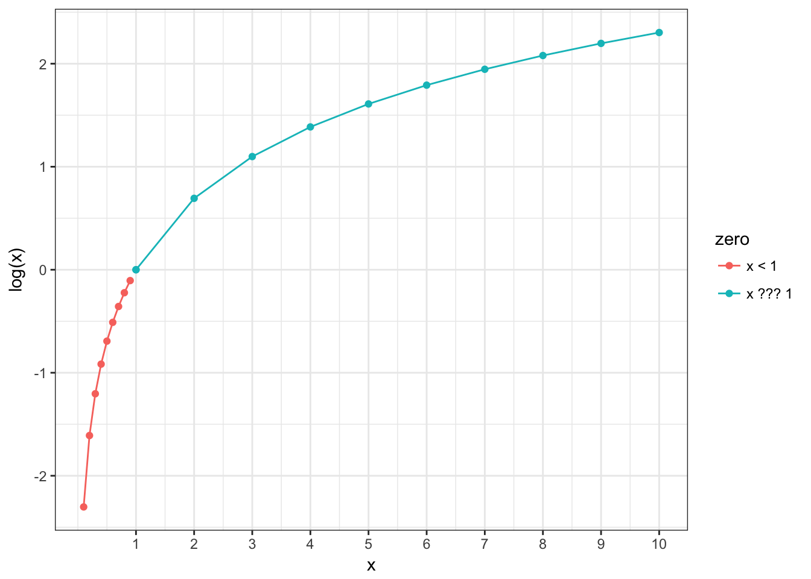
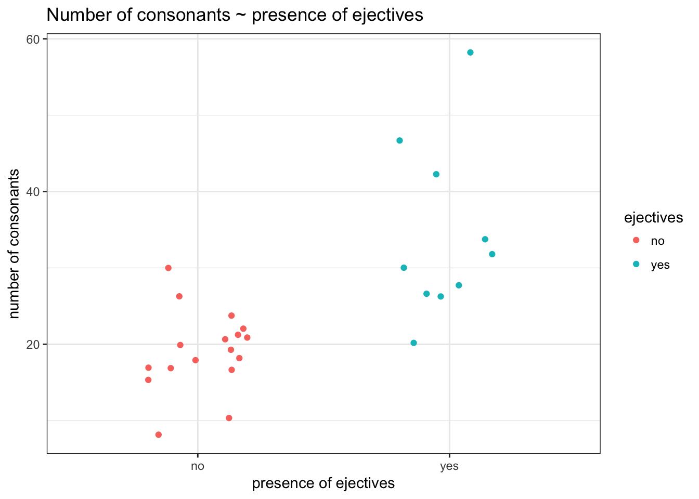

Logistic regression
10.05.2018
1. Background statistics
Variable types
- numeric
- categorical
What do we know:
- Confidence intervals (numeric variable)
- Fisher test (categorical by categorical)
- Simple linear regression (numeric by one numeric variable)
- Linear regression with dummy variables (numeric by any variable)
Today:
- Multiple linear regression (numeric by several numeric variables)
- Multiple linear regression with dummy variables (numeric by any variable)
- Logistic (logit) regression (binary dependent variable by any number of variables of any type)
2.1 How does it work
Logistic or logit regression was developed in [Cox 1958]. It is a regression model wich predicts binary dependent variable using any number of variables of any type.
What do we need?
\[\underbrace{y_i}_{[-\infty, +\infty]}=\underbrace{\beta_0+\beta_1\cdot x_1+\beta_2\cdot x_2 + \dots +\beta_z\cdot x_z +\epsilon_i}_{[-\infty, +\infty]}\]
But in our case \(y\) is a binary variable.
- Probability?
\[P(y) = \frac{\mbox{# successes}}{\mbox{# failures} + \mbox{# successes}}; P(y) \in [0, 1]\]
- Odds?
\[odds(y) = \frac{P(y)}{1-P(y)} = \frac{\mbox{P(successes)}}{\mbox{P(failures)}} = \frac{\mbox{# successes}}{\mbox{# failures}}; odds(y) \in [0, +\infty]\]
- Natural logarithm of odds
\[\log(odds(y)) \in [-\infty, +\infty]\]
2.2 Reminder about logarithms

- if log(odds) are greater then 0, it means that we have more successes then failures;
- if log(odds) is equal to 0, it means that we have the same number of successes and failures;
- if log(odds) are less then 0, it means that we have less successes then failures;
2.3 Probability and log(odds)
\[\log(odds(s)) = \log\left(\frac{\#s}{\#f}\right)\] \[P(s) = \frac{\exp(\log(odds(s)))}{1+\exp(\log(odds(s)))}\]
Results of the logistic regression can be easily converted to probabilities.
2.4 Sigmoid
Formula for this sigmoid is the following:
\[y = \frac{1}{1+e^{-x}}\]
Feeting our logistic regression we should be able to reverse our sigmoid:
Formula for this sigmoid is the following:
\[y = \frac{1}{1+e^{-(-x)}} = \frac{1}{1+e^{x}}\]
Feeting our logistic regression we should be able to move center of our sigmoid to the left/right side:
Formula for this sigmoid is the following:
\[y = \frac{1}{1+e^{-(x-2)}}\]
Feeting our logistic regression we should be able to squeeze/stretch center of our sigmoid:
\[y = \frac{1}{1+e^{-4x}}\]
So the more general formula will be: \[y = \frac{1}{1+e^{-k(x-z)}}\]
where
- depending on \(x\) values sigmoid can be reversed
- \(k\) is squeeze/stretch coefficient
- \(z\) is coefficient that indicates movement of the sigmoid center to the left or right side
3. Numeric example
It is interesting to know whether the languages with ejective sounds have in average more consonants. So we collected data from phonological database LAPSyD: http://goo.gl/0btfKa.
ej_cons <- read.csv("http://goo.gl/0btfKa")
ej_cons %>%
ggplot(aes(ejectives, n.cons.lapsyd, color = ejectives))+
geom_jitter(width = 0.2)+
labs(title = "Number of consonants ~ presence of ejectives",
x = "presence of ejectives",
y = "number of consonants")+
theme_bw()
- Model without predictors
fit1 <- glm(ejectives~1, data = ej_cons, family = "binomial")
summary(fit1)##
## Call:
## glm(formula = ejectives ~ 1, family = "binomial", data = ej_cons)
##
## Deviance Residuals:
## Min 1Q Median 3Q Max
## -0.9619 -0.9619 -0.9619 1.4094 1.4094
##
## Coefficients:
## Estimate Std. Error z value Pr(>|z|)
## (Intercept) -0.5306 0.3985 -1.331 0.183
##
## (Dispersion parameter for binomial family taken to be 1)
##
## Null deviance: 35.594 on 26 degrees of freedom
## Residual deviance: 35.594 on 26 degrees of freedom
## AIC: 37.594
##
## Number of Fisher Scoring iterations: 4How we get this estimate value?
table(ej_cons$ejectives)##
## no yes
## 17 10log(10/17)## [1] -0.5306283What does this model say? This model says that if we have no predictors and take some language it has \(\frac{0.5306283}{(1+e^{-0.5306283})} = 0.3340993\) probability to have ejectives.
- Model with numeric predictor
fit2 <- glm(ejectives~n.cons.lapsyd, data = ej_cons, family = "binomial")
summary(fit2)##
## Call:
## glm(formula = ejectives ~ n.cons.lapsyd, family = "binomial",
## data = ej_cons)
##
## Deviance Residuals:
## Min 1Q Median 3Q Max
## -1.8317 -0.4742 -0.2481 0.1914 2.1997
##
## Coefficients:
## Estimate Std. Error z value Pr(>|z|)
## (Intercept) -9.9204 3.7699 -2.631 0.0085 **
## n.cons.lapsyd 0.3797 0.1495 2.540 0.0111 *
## ---
## Signif. codes: 0 '***' 0.001 '**' 0.01 '*' 0.05 '.' 0.1 ' ' 1
##
## (Dispersion parameter for binomial family taken to be 1)
##
## Null deviance: 35.594 on 26 degrees of freedom
## Residual deviance: 16.202 on 25 degrees of freedom
## AIC: 20.202
##
## Number of Fisher Scoring iterations: 6What does this model say? This model says:
\[\log(odds(ej)) = \beta_o + \beta_1 \times n.cons.lapsyd = -9.9204 + 0.3797 \times n.cons.lapsyd\]
Lets visualize our model:
ej_cons %>%
mutate(`P(ejective)` = as.numeric(ejectives) - 1) %>%
ggplot(aes(x = n.cons.lapsyd, y = `P(ejective)`))+
geom_smooth(method = "glm", method.args = list(family = "binomial"), se = FALSE) +
geom_point()+
theme_bw()
So probability for a language that have 30 consonants will be \[\log(odds(ej)) = -9.9204 + 0.3797 \times 30 = 1.4706\] Thus, the output YES (the langiage has ejectives) has approximately 1.47 times more chances to occure if the language has 30 consonants than the output NO.
\[P(ej) = \frac{1.47061}{1+1.4706}=0.8131486\]
4. predict(): Evaluating the model’s performance
new.df <- data.frame(n.cons.lapsyd = c(30, 55, 34, 10))
predict(fit2, new.df) # odds## 1 2 3 4
## 1.470850 10.963579 2.989686 -6.123334predict(fit2, new.df, type = "response") # probabilities## 1 2 3 4
## 0.813186486 0.999982679 0.952106011 0.002186347predict(fit2, new.df, type = "response", se.fit = TRUE) # probabilities and confidense interval## $fit
## 1 2 3 4
## 0.813186486 0.999982679 0.952106011 0.002186347
##
## $se.fit
## 1 2 3 4
## 1.512886e-01 7.882842e-05 6.869366e-02 5.038557e-03
##
## $residual.scale
## [1] 1So we actually can create a plot with confidense intervals.
ej_cons_ci <- cbind.data.frame(ej_cons, predict(fit2, ej_cons, type = "response", se.fit = TRUE)[1:2])
ej_cons_ciej_cons_ci %>%
mutate(`P(ejective)` = as.numeric(ejectives) - 1) %>%
ggplot(aes(x = n.cons.lapsyd, y = `P(ejective)`))+
geom_smooth(method = "glm", method.args = list(family = "binomial"), se = FALSE)+
geom_point() +
geom_pointrange(aes(x = n.cons.lapsyd, ymin = fit - se.fit, ymax = fit + se.fit))+
labs(title = "P(ej) ~ number of consonants",
x = "number of consonants",
caption = "data from LAPSyD database")+
theme_bw()5. More variables in the model
\[\underbrace{\log(odds(y))}_{[-\infty, +\infty]}=\underbrace{\beta_0+\beta_1\cdot x_1+\beta_2\cdot x_2 + \dots +\beta_z\cdot x_z +\epsilon}_{[-\infty, +\infty]}\]
The significance of each variable (predictor) is not the same in models with different number of variables. In other words, it depends on the combination of predictors in a specific model.
6. Model selection
AIC (Akaike Information Criterion) is a goodness-of-fit measure to compare the models with different number of predictors. It penalizes a model for having too many predictors. The smaller AIC, the better.
While comparing models, we are looking for the minimal optimal model:
* optimal, as it helps to predict the output in the best way
* minimal optimal, as it uses the minimal number of predictors
Other measures to evaluate the model includes:
* accuracy
* concordance index C (the area under the ROC-curve)
* Nagelkerke pseudo-\(R^{2}\)
7. Interaction of the variables
Interaction happens when the effect of one predictor on the outcome depends on the value of another predictor. Interaction of two predictors can be positive (their joint role increases the effect) or negative (their joint role decreases the effect).
Example: animacy and semantic class; animacy and the choice of syntactic construction; effect of verb transitivity in different language varieties.

8. Conclusion: Generalized linear models (GLM)
GLM is a broad class of models that include linear regression, logistic regression, log linear regression, Poisson regression, ANOVA, ANCOVA, etc. In order to call a particular method to be GLM, that method should have the following three components:
Random Component: It refers a response variable (y), which need to satisfy some assumptions. Examples: Linear regression of y (dependent variable) follows normal distribution. Logistic regression response variable follows binomial distribution.
Systematic Component: It is nothing but explanatory variables in the model. Systematic components helps to explain the random component.
Link Function: It is link between systematic and random component. Link function tells how the expected value of response variable relates to explanatory variable. Link function of linear regression is E[y] and link function of logistic regression is logit(??).
What was important today?
- classifiers: binary, multi-class (multinomial)
- odds
- sigmoid
- significance of the variables (predictors)
- interactions